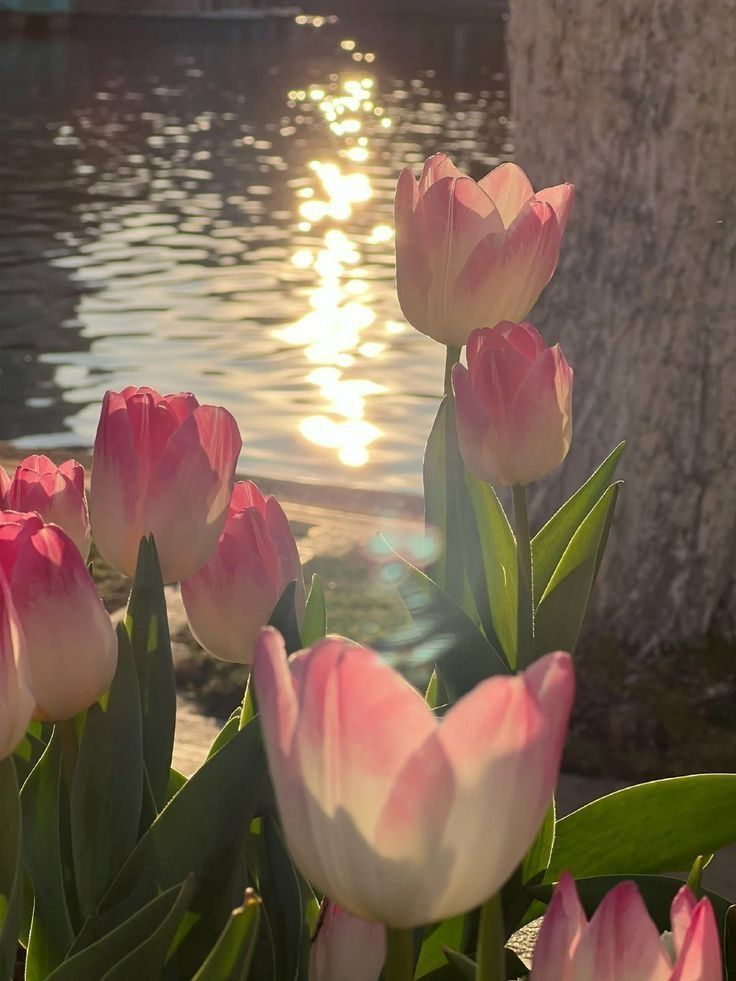
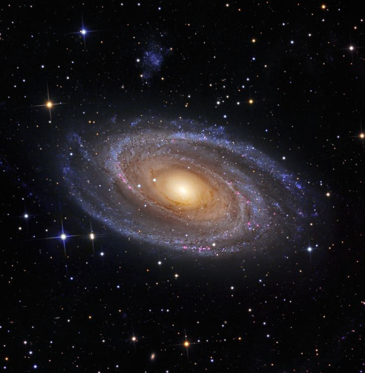

💌 Home
🌸 Profile
💌 Archive
📞 Unsaid Letters
Moonlit Whispers
✮⋆🍥₊˚ෆ

Author: Sylvia Plath | Year: 1961
Tulips
morning dew kisses petals, light drifts over the garden, tiny sparks of hope bloom in silence.
Author: Victor Daley | Year: 1988
Pink Horizon
the sunset hums softly, a lullaby of fading light, painting every goodbye in shades of hope and hush.

Author: Luna | Year: 2023
Starlit Letters
I write to the moon, hoping it reads my thoughts when the night grows too quiet and the stars lean in to listen.